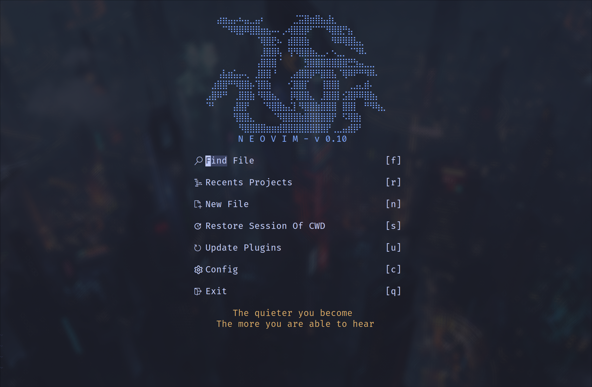
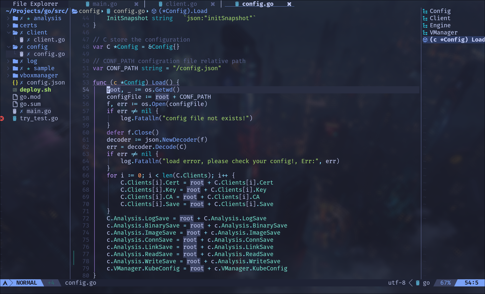
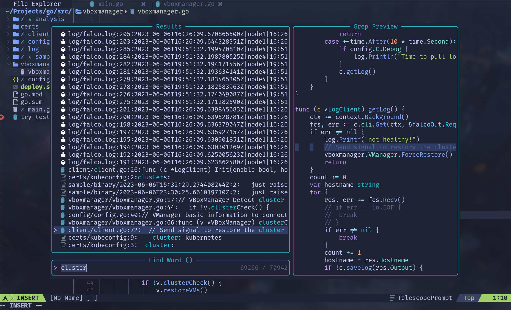

现在回头看几年前自己写的插件配置文章, 看着那些曾经用过但后来都纷纷被替代的插件, 我会莫名怀念那段因计算机和终端而兴奋不已的自己.
在 2019 年四月份第一次写 vim 配置文章后, 时间已经过去了四年. 物是人非, 这几年发生了太多的破事烂事, 回想起来, 竟没有几件好事可供玩赏的, 国家的兴盛繁荣和普通人暗淡的生活产生了强烈的对比, 其带来的撕裂感让包括我在内的许多人都感到麻木且疲惫, 每当感到绝望和悲哀时, 我会诉诸文字来排遣情绪, 敲敲代码来为自己的生活带来些许意义, 毕竟, 这是程序员为数不多的特权了.
而不管是写文也好, 写代码也好, 人若重视, 自然会想得到一个趁手的工具: jetbrain IDE, obsidian, word, trilium, vscode …… 对于大部分人来说, 这些便已经足够, 只是如果有人仔细观察, 就会发现这些工具都是商业化的闭源软件, vscode 也是, 即便宣称开源, 但是人们用的二进制包是微软在开源代码的基础上添加了功能后封装闭源的. 不过说到底, 这些软件开源与否, 对我们普通人来说并没有多大的影响, 只是对于有开源软件洁癖的人来说可能会无法接受, 这个时候如果冒出来一个开源, 简单却又拥有无限扩展性和不输给 IDE 的功能的编辑器, 那么无疑能收获一批粉丝, 而 neovim 正是这样的编辑器.
之前在知乎看到了一个问题: 编辑器中你认为最重要的功能有哪些? 我在这里列出自己认为比较重要的功能, 来作为本文的索引:
- 良好的编码体验
- 人性化的界面
- 代码调试
- 模糊查找
- 其他
与此同时: 文本仅对一些比较有用的插件进行推荐, 并在文末贴出自己的配置链接, 在这里不对自己的配置过多的介绍 (因为确实结构比较简单, 大伙一看就会明白的 :) .
良好的编码体验
| 功能 | 插件 |
|---|---|
| 语法高亮 | nvim-treesitter/nvim-treesitter |
| 代码补全 | hrsh7th/nvim-cmp |
| 代码片段 | L3MON4D3/LuaSnip |
| 其他linter, formatter等 | nvimtools/none-ls.nvim |
| AI(Copilot)集成 | zbirenbaum/copilot.lua |
| git 状态显示 | lewis6991/gitsigns.nvim |
| 自动生成文档 | danymat/neogen |
| 光标跳转 | folke/flash.nvim |
| lsp 增强体验 | glepnir/lspsaga.nvim |
| 高亮当前词 | RRethy/vim-illuminate |
| 代码结构展示 | nvim-neo-tree/neo-tree.nvim |
| 特色缩进 | lukas-reineke/indent-blankline.nvim |
| 特色注释 | folke/todo-comments.nvim |
| 快速注释 | numToStr/Comment.nvim |
| tab 跳出括号和字符串 | abecodes/tabout.nvim |
| 代码折叠 | kevinhwang91/nvim-ufo |
| lsp/format/dap 源管理 | williamboman/mason.nvim |
| 括号操作 | kylechui/nvim-surround |
| 自动补全括号中括号等 | windwp/nvim-autopairs |
部分功能截图:

人性化的界面
| 功能 | 插件 |
|---|---|
| 主题 | folke/tokyonight.nvim |
| 引导界面 | glepnir/dashboard-nvim |
| 文件树 | nvim-neo-tree/neo-tree.nvim |
| 标签栏 | akinsho/bufferline.nvim |
| 状态栏 | hoob3rt/lualine.nvim |
截图:


代码调试
| 功能 | 插件 |
|---|---|
| 调试功能 | mfussenegger/nvim-dap |
| 展示 ui | rcarriga/nvim-dap-ui |
| inline 变量显示 | theHamsta/nvim-dap-virtual-text |

模糊查找
| 功能 | 插件 |
|---|---|
| 模糊查找 | nvim-telescope/telescope.nvim |
| fzf集成 | nvim-telescope/telescope-fzf-native.nvim |
截图: 
其他
| 功能 | 插件 |
|---|---|
| Tmux适配 | christoomey/vim-tmux-navigator |
| 删除buffer的同时不破坏窗口布局 | famiu/bufdelete.nvim |
| 远程剪切板同步 | ojroques/nvim-osc52 |
| session 恢复 | tpope/vim-obsession |
最后贴上配置文件地址, 感兴趣可以去看看: link